Die Costa Verde entlang: Frühmorgens mit dem Tour-Bus aus Rio die Costa Verde hinunter, rund zwei Stunden Richtung Westen. Kaffee und Kokosnuss mit Blick auf die Bucht von Mangaratiba.
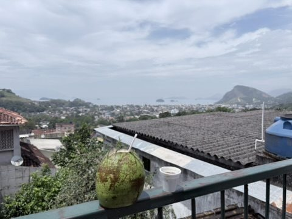
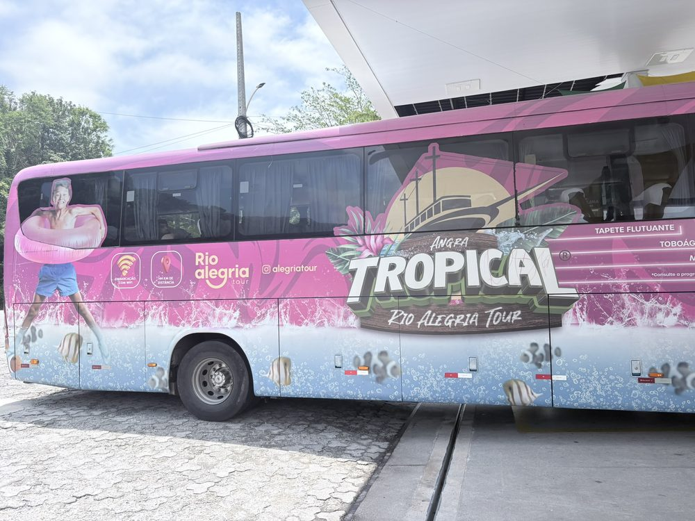
Ilha Grande: Mit dem Schoner hinaus in die Bucht von Ilha Grande. Die Insel ist autofrei und zu großen Teilen von Mata Atlântica bedeckt, dem atlantischen Küstenregenwald. Bis 1994 stand hier ein berüchtigtes Gefängnis, das die Insel lange vom Tourismus fernhielt – heute ist gerade das ihr Glück. Badestopps in türkisem Wasser, an Bord Musik und Caipirinhas; auf dem Rückweg ziehen dunkle Wolken über die Berge.
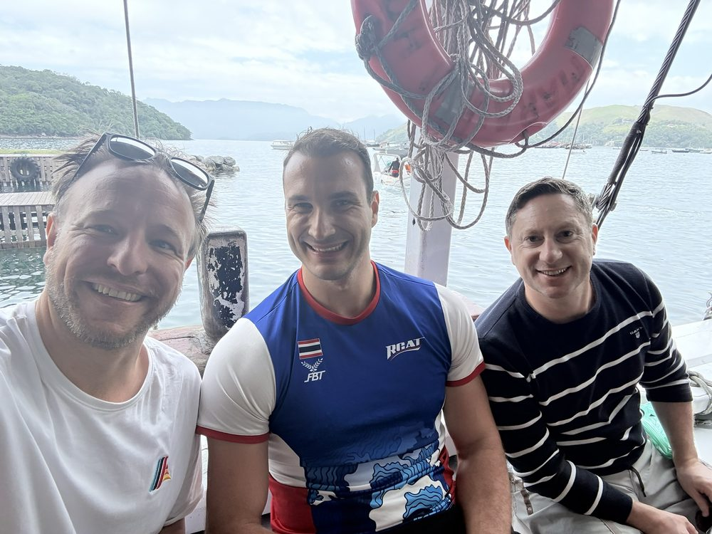
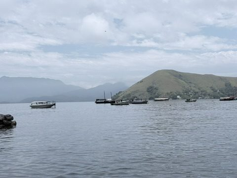
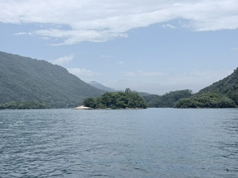
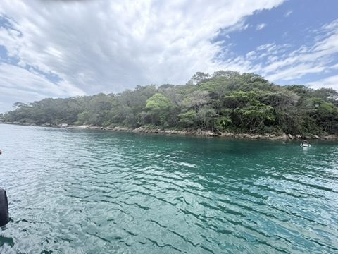
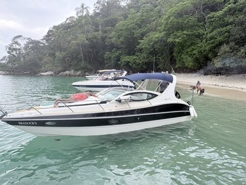
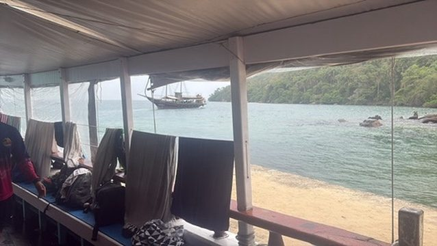
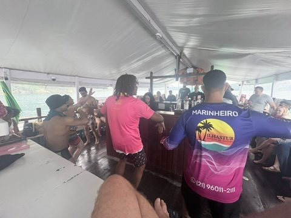
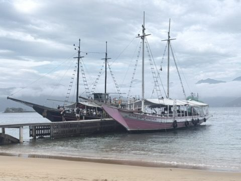
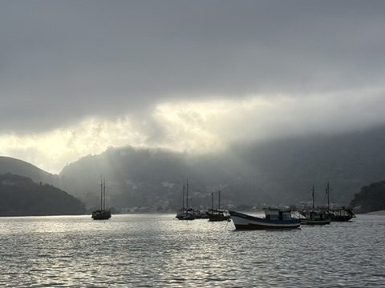
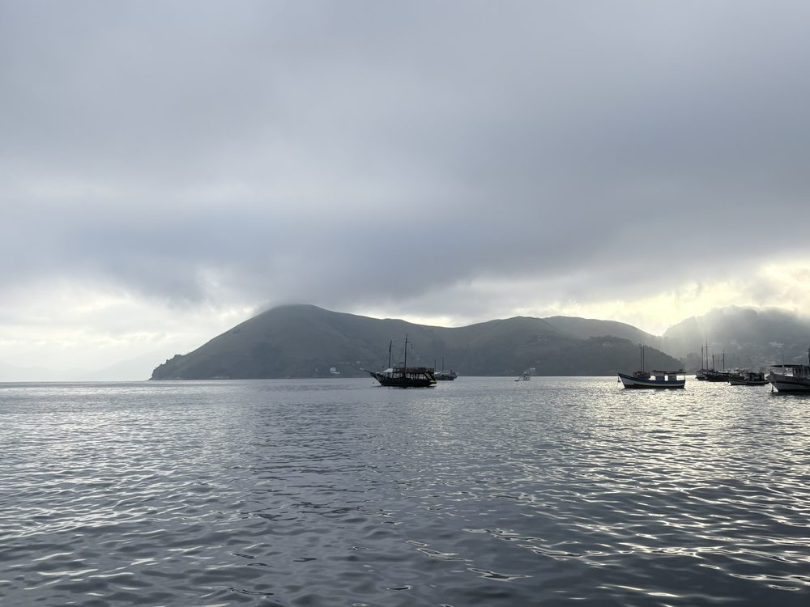
Zurück in Rio: Auf der Rückfahrt leuchtet ein riesiger Weihnachtsbaum am Straßenrand – Advent bei 30 Grad. In Leme ist abends noch einiges los.
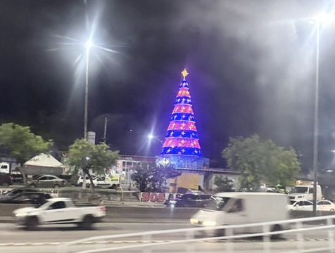
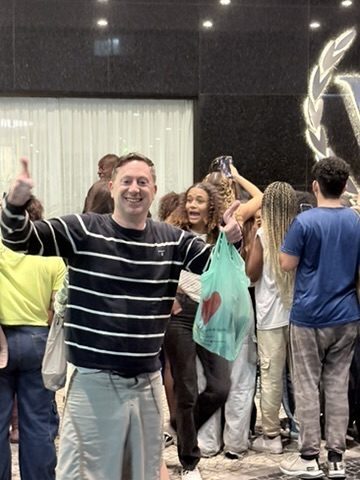